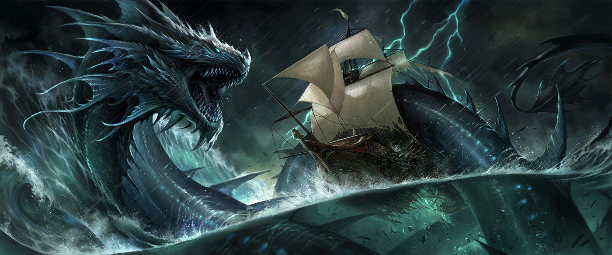

Si hay un monstruo marino cuya leyenda se extiende casi hasta el principio de los tiempos es la del Leviatán,es una bestia marina de gran poder del Antiguo Testamento, creada por Dios y relacionada con satanás. Durante la edad de oro de los viajes marinos, los marineros lo identificaban como un horrible dragón-serpiente,se decia que sus escamas eran impenetrables, que nadie la podia matar, a menudo la relacionan con la maldad.

“En aquel día Yahvé castigará con su espada dura, grande y fuerte al leviatán serpiente veloz, y al Leviatán serpiente tortuosa ; y matarán al dragón que está en el mar” (Isaías 27:1)
“Rompiste las cabezas del Leviatán; y lo diste por comida a las tortugas de mar” (Salmo 74:14)